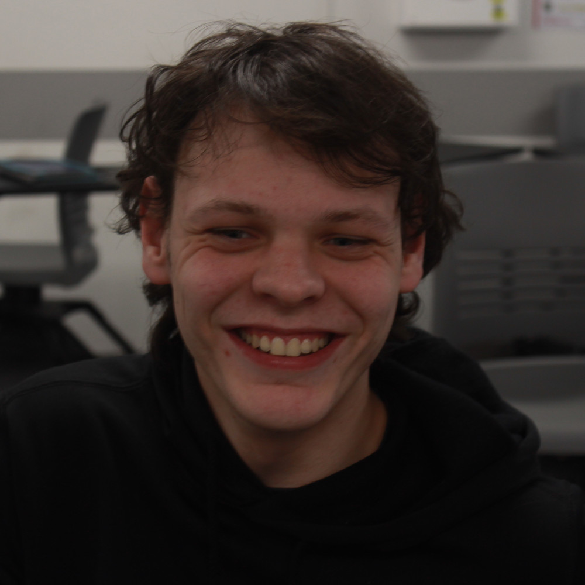
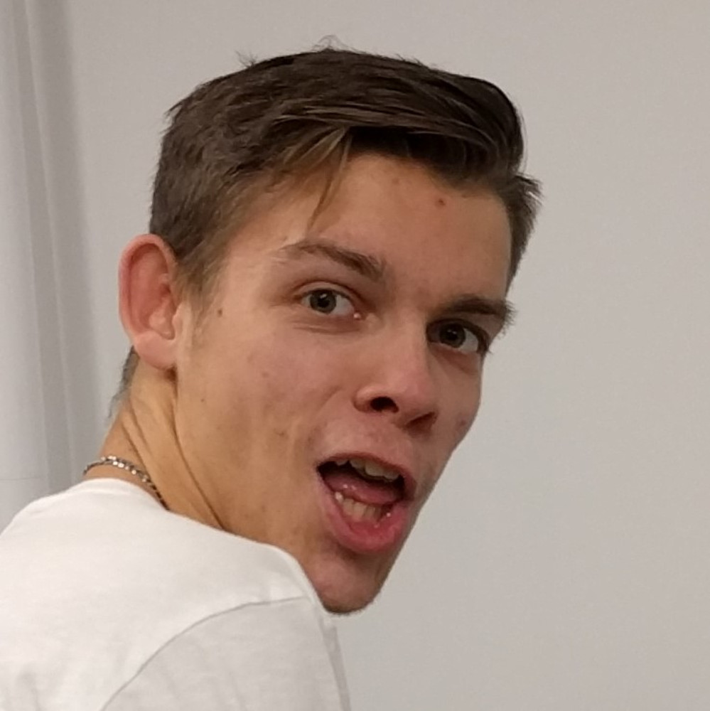
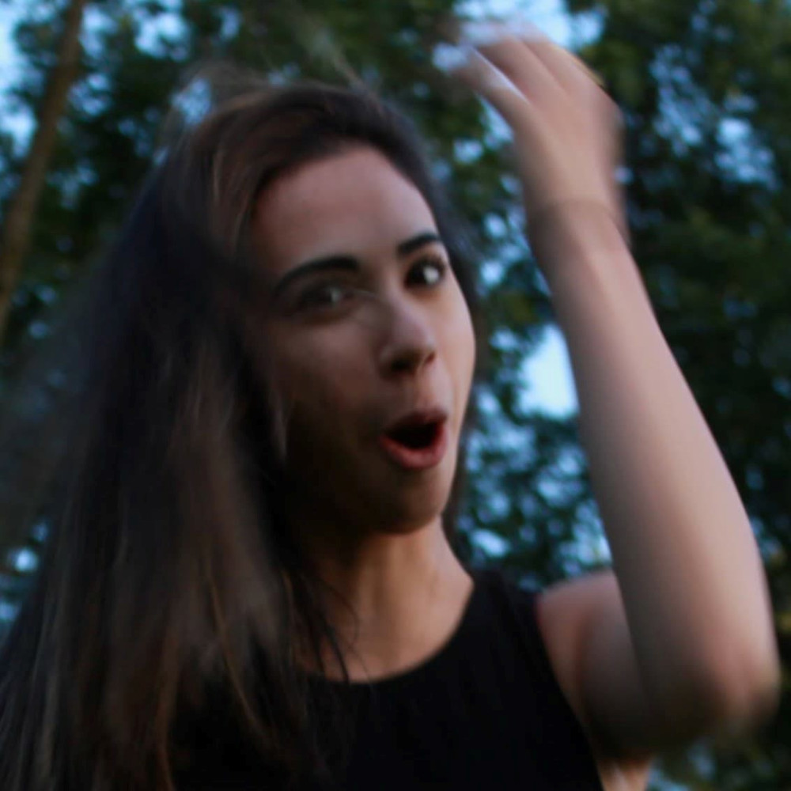
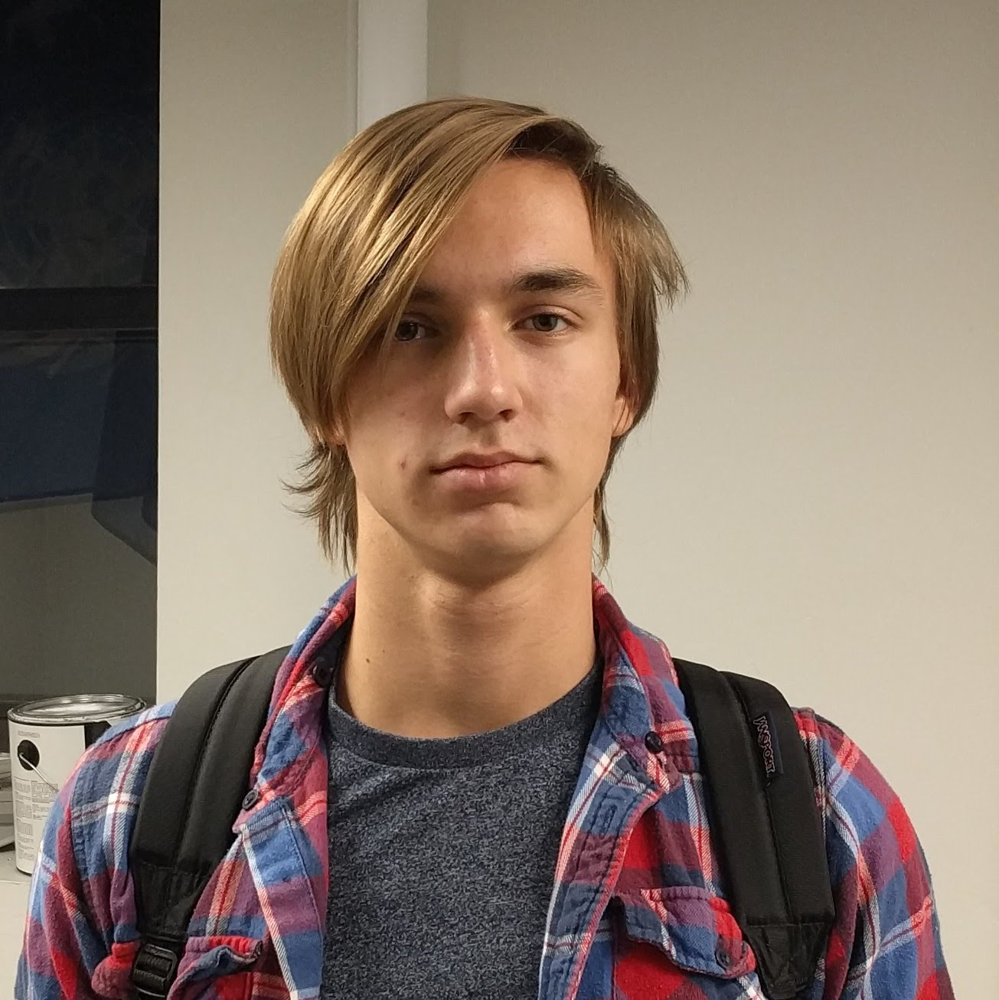
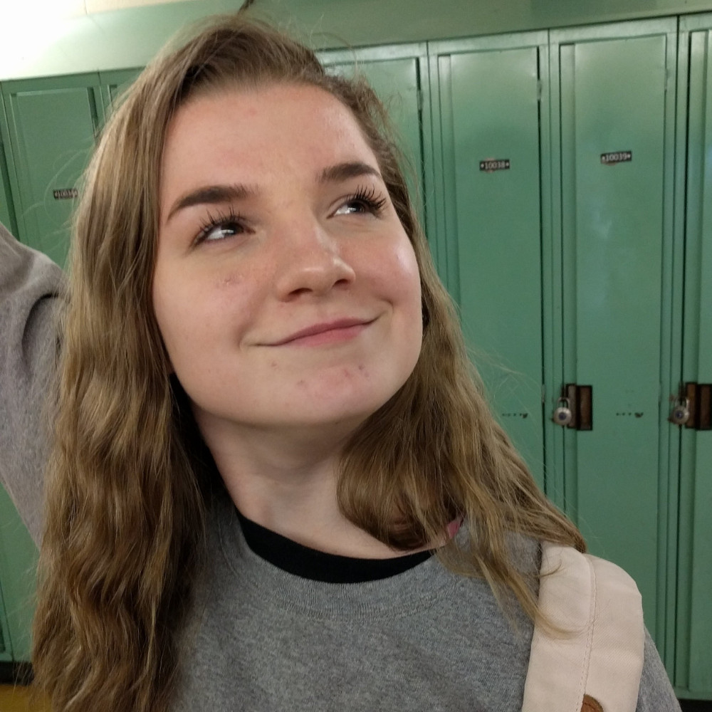

À propos de nous
 |
 |
 |
| Patrick | Dharik | Helena |
| Patrick a contribué de manière passive-agressive à la construction du robot, du kiosque et de ce site web. On se souviendra de lui par sa quantité impressionnante de dépressions nerveuses tout au long de la compétition. | Le membre le plus têtu de l'équipe, il s'est investi dans le mécanisme de lancement du robot, mais personne ne comprend vraiment ce qu'il a fait. | Une artiste parmi des bollés, elle s'est investie dans la conception et la construction du kiosque. Helena a aussi été étrangement agressive par rapport aux teintes dont nous avions besoin. |
| - sigh | - "I did so much sh*t! I did more than the frame..." | - |
|  |  |
 |
| Nic | Daniel | Sirima |
| Nic est le maître du tapis roulant, alors c'est grâce à lui que notre robot ramasse des pièces de jeu. Aussi, il a su conserver son sourire alors que tout le monde était en crise, donc merci, Nic. | La motivation (ou la folie) de ce mec n'a aucune limite. Il a gracieusement accepté d'interpréter le directeur de John Abbott pour notre vidéo et a porté le même complet-cravate trois jours d'affilée. Il a aussi sauté dans un lac en plein décembre. "Communisme". | Elle a programmé pour la compétition de programmation ridicule de CRC (elle est allé jusqu’à Westmount pour ça!!). Elle a aussi filmé la vidéo. Une fois, j’ai essayé de réchauffer sa tourtière et le micro-ondes a arrêté de fonctionner. |
 |
 |  |
| Laurie | Oliver | Ava |
| Sans Laurie, notre kiosque ne serait pas aussi incroyable. Grâce à ses compétences en organisation, notre salle de club est *un peu* moins en désordre. | Have you seen our kiosk? Probably not, but if we have a beautiful arch, that’s all thanks to Olivier. | Vétérane des T-slotted bars, elle contribua à la construction du robot ainsi qu'à la vidéo. Surtout, elle s'est goinfrée d'ailes de poulets “épicées” de la pizzeria Adesso. |
 |
 |
 |
| Melissa | Brodie | Alec |
| Melissa n’a pas fait grand chose durant les vacances, mais elle nous a aidé avec le kiosque. Elle sert également de (seul) support moral pour l’équipe. | Il a construit le bar (environ). J’arrive à peine à croire que son père est un carpentier. | J’ignorais que ce gars existait jusqu’à ce que je le traque sur Facebook, mais il a été essentiel à la conception du robot (jusqu’à ce que Dharik se débarasse de toutes ses idées). Il aime les voitures. C’est tout ce que je sais |
 |
 |
 |
| (Tall) Nick | Clémence | Cassandra |
| Il n’arrête pas de venir au club avec sa planche à roulettes. Il nous a aidé à déplacer des objets lourds puisque Patrick et Dharik sont trop faibles. | La merveilleuse interprète de Deanna la directrice, Clémence, a décidé de contribuer à notre vidéo puisqu’elle n’avait rien de mieux à faire durant ses vacances. Elle a brièvement aidé à construire le système de Dharik alors qu’elle était en classe. | Qui? |